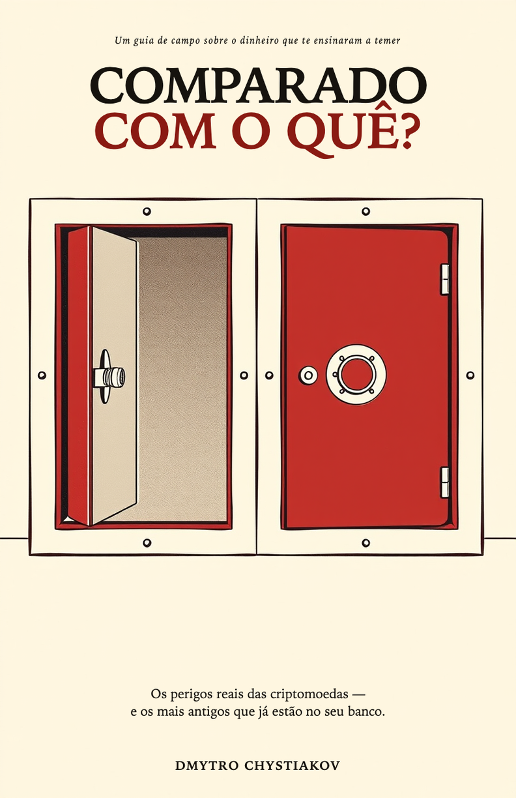

Em agosto de 2024, um homem em Washington perdeu US$ 243 milhões por causa de um telefonema. Nenhuma linha de código foi quebrada. Nenhuma carteira falhou. Tudo funcionou exatamente como foi projetado — e é esse o problema que este livro leva a sério.
Construído sobre um catálogo público com mais de 650 incidentes documentados, o livro pega os perigos reais das criptomoedas um por um e coloca cada um ao lado do seu gêmeo que já opera nas finanças de sempre. Cada capítulo termina com um veredicto honesto sobre qual é pior — e os veredictos não vão todos na mesma direção.
A cripto não inventou nenhum desses crimes. Ela os registrou.
Não é um mercado com fraude dentro. É uma fraude com um mercado acoplado.
A opacidade não reduz o congelamento. Ela remove a explicação.
Este livro não estava nos planos. Durante anos, seu autor documentou incidentes cripto em um catálogo público de pesquisa — classificando cada grande roubo, fraude e colapso desde 2010, com uma fonte ao lado de cada afirmação. Em algum ponto depois do incidente número seiscentos, o padrão ficou impossível de ignorar: a maioria desses crimes não era nova. A tecnologia mudou. Os mecanismos financeiros, não.
Primeiro veio a pesquisa. O livro é um dos seus resultados. A pesquisa continua pública.
Assine e eu envio O primeiro caso: a abertura do livro e o primeiro capítulo inteiro — o telefonema que custou US$ 243 milhões a um homem. Depois, um e-mail quando o livro sair. Nada mais.
Seis regras que impedem a maioria dos roubos do livro. Pôster grátis — imprima, compartilhe.
Cada incidente deste livro existe no registro público — processos judiciais, relatórios de reguladores, transações na blockchain que qualquer pessoa pode ler. Veja você mesmo: o índice de verificação — afirmação por afirmação, artefato por artefato.
Dmytro Chystiakov é o autor do OAK, um catálogo público com mais de 650 incidentes cripto documentados. Trabalhou em bancos, cibersegurança e IA — e escreveu o livro de que ele mesmo precisava quando decidia pela primeira vez se entrava em cripto. Por que passei anos documentando incidentes cripto →